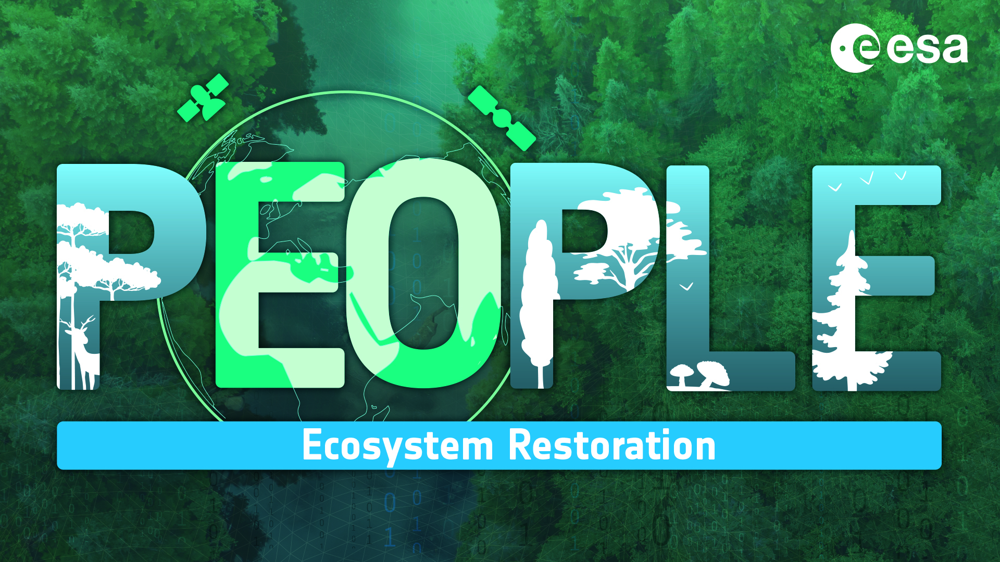
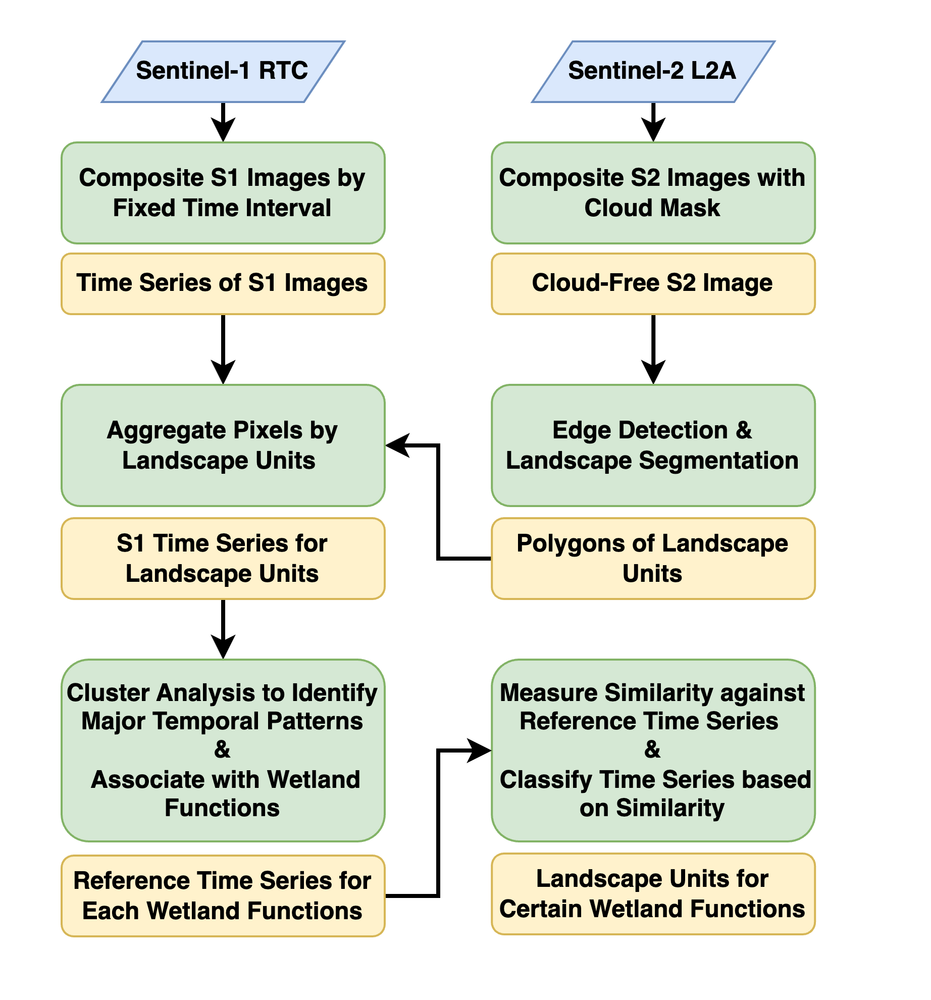

Welcome to the PEOPLE-ER Wetland Function Assessment Tutorial!

Problem Statement
For wetland ecosystems, the location and persistence of surface water (inland and coastal) is a key driver of biological diversity and ecosystems services. Restoring of natural wetland inundation function is often an important feature of wetland restoration because the hydrological regime drives the nutrient fluxes, water quality, and habitat suitability for plant and animal species and other biodiversity. For example, enabling reconnection of wetlands within a floodplain and restoring wetland inundation functions can be a key indicator of wetland restoration.
The biological effects of irregular inundation is recognized as a high-priority remote sensing biodiversity product, related to the “ecosystem disturbance and habitat structure” remote sensing enabled essential biodiversity variables (RS-EBVs) (Skidmore et al. 2021). EO time series have a proven capability in the detection of surface water location and vegetation inundation seasonality. Several initiatives aimed to use multi-spectral and radar time series such as the Joint Research Centre's (JRC) global surface water permanence dataset based on the Landsat time series (Pekel et al. 2016) and the ESA financed WorldWater project1 provide valuable information but are limited to the detection of surface water. Ecosystem restoration practitioners require tools to assess complex wetland ecosystems. However, challenges include working with large volumes of EO data, handling EO data time series, the complexity of wetland structure, and methods to assess wetland restoration, i.e., using reference sites or reference time periods. Another factor is the inter-annual variability of climate and short to long-term responses of wetlands to restoration processes and climate variability.
Tutorial Objective
The objective of the PEOPLE-ER Wetland and Wetness Trends tutorial is to provide and demonstrate a flexible, and powerful set of EO data analytics tools to support wetland ER assessment. The tutorial demonstrates methods for high-resolution satellite EO data time series analysis to enable the monitoring and comparison of surface water dynamics and wetness trends in natural to heavily modified wetland ecosystems.
With recent innovation in cloud computing and the availability of long-term Synthetic Aperture Radar (SAR) EO datasets at high temporal and spatial resolution, the technical objective is to develop analysis tools in such a way that it is not tied to a singular EO exploitation platform, but instead can be used on a variety of platforms.
Tutorial Workflow
This workflow will be split into 5 notebooks that will guide you through the tutorial:
- 1) Inspect S1 Time-Series for an Area of Interest
- 2) Segment Landscape based on S2 Composites
- 3) Compile Time Series by Units of Analysis
- 4) Clustering and Reference Extraction
- 5) Comparing similarities between Time Series
Each one of these notebooks will touch on key steps of the PEOPLE-ER workflow to Assess Wetland Function in natural to heavily modified wetland ecosystems.
Workflow Diagram

Demonstration Area
The area used for the demonstration of this workflow is the An-Giang province of Vietnam, a highly modified wetland landscape, that has recently seen efforts to restore natural flood dynamics.
Acknowledgements
This tutorial was developed within the Pioneer Earth Observation apPlications for the Environment Ecosystem Restoration (PEOPLE-ER) project financed by the European Space Agency (ESA). Members of the PEOPLE-ER consortium include:


How to Cite
When using this tool in your work we ask that you please cite the Wetland Function Assessment tool as follows:
"The Wetland Function Assessment Tutorial was developed in the PEOPLE-ER Project, managed by Hatfield Consultants, and financed by the European Space Agency."
License
Wetland Function Assessment Tutorial © 2023 by PEOPLE-ER Project is licensed under Attribution-ShareAlike 4.0 International